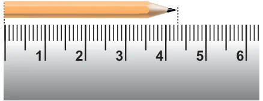
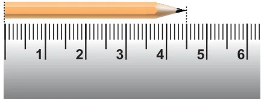
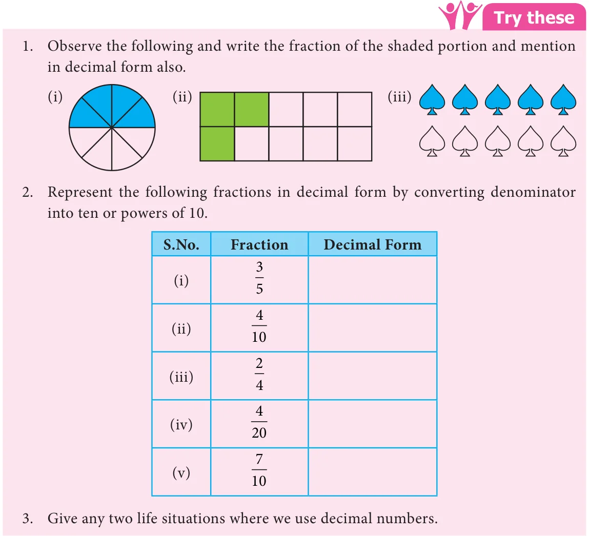

Chapter
1
NUMBER SYSTEM
Learning Objectives
- To recall the decimal notation and to understand the place value in decimals.
- To learn the concepts of decimals as fractions with denominators of tens and its powers.
- To represent decimal numbers on number line.
Recap Decimal Numbers
Kala and Kavin went to a stationery shop to buy pencils. Their conversation is given below. Kala : What is the price of a pencil? Shopkeeper : The price of a pencil is four rupees and fifty paise. Kala : Ok sir. Give me a pencil. Kavin : We usually express the bill amount in rupees and paise as decimals. So the price of a pencil can be expressed as ₹4.50. Here 4 is the integral part and 50 is the decimal part. The dot represents the decimal point. (After a week of time in the class room)
Teacher : We have studied about fractions and decimal numbers in earlier classes. Let us recall decimals now. Kala and kavin, can you measure the length of your pencils?

Kavin : Both the pencils seem to be of same length. Shall we measure and check?
Kala : Ok Kavin. The length of my pencil is
4 cm 3 mm (Fig. 1.1).

Kavin : Length of my pencil is 4 cm 5 mm (Fig. 1.2).
Kala : Can we express these lengths in terms of centimetres?
Kavin : Each centimetre is divided into ten equal parts known as millimetres. Do you remember that we have studied about tenths. I can say the length of my pencil as 4 and 5 tenths of a cm.
Kala : Since 1 mm \(= \frac{1}{10}\) cm or one tenth of a cm, it can be represented as 4.5 cm. Kavin : Then the length of your pencil is 4.3 cm. Is it right?
Teacher : Both of you are right. Now we will further study about decimal numbers.
